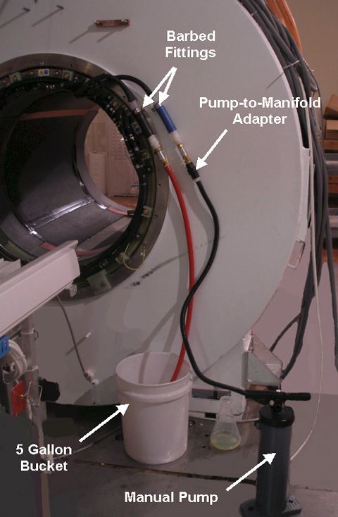
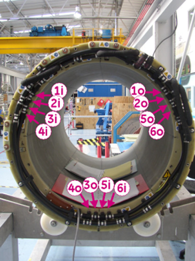
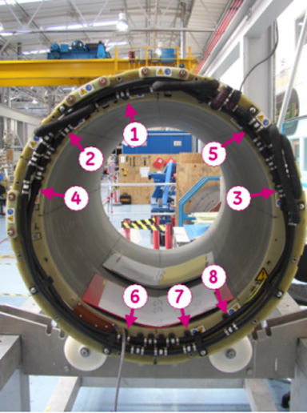
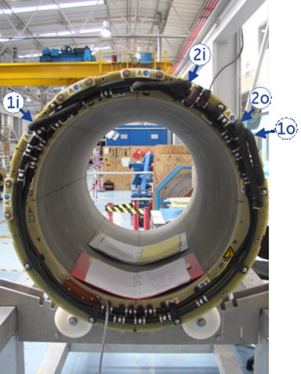
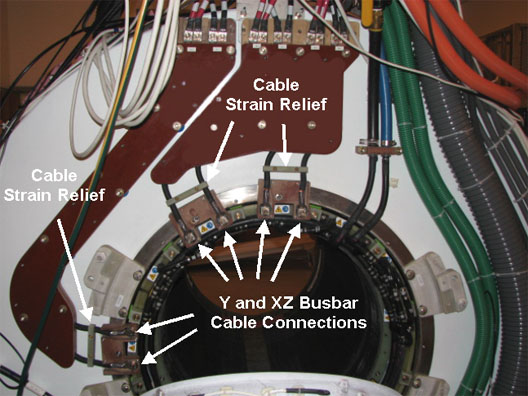
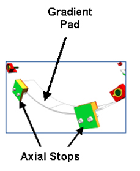
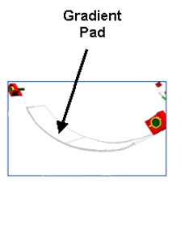

Operating Documentation
Direction 5670000, Rev# 1
Module Version 5.0, Version Date 1/20/10
Operating Documentation |
| ||||
| STRONG MAGNETIC FIELD! | ||||
| FERROUS MATERIALS CAN BECOME DANGEROUS PROJECTILES IN THE PRESENCE OF THE MAGNETIC FIELD PRODUCED BY THE MAGNET. | ||||
| DO NOT BRING ANY FERROMAGNETIC TOOLS OR EQUIPMENT INTO THE MAGNET ROOM. |
| ||||
| ELECTRICAL SHOCK HAZARD! | ||||
| CONTACT WITH CONNECTORS LEADING TO AN ENERGIZED POWER SUPPLY CAN CAUSE ELECTRICAL SHOCK. | ||||
| FOLLOW LOCKOUT/TAGOUT PROCEDURES WHILE PERFORMING SERVICES TO ELECTRICAL CONNECTION COMPONENTS. |
| ||||
| Electrical Shock Hazard! | ||||
| Coolant circulating through the gradient coil is in contact with live electrical conductors. Using wrong type of coolant may result in electrical shock. | ||||
| Always use coolant specified by DVw gradient coil service procedure. |
| ||||
| Dangerous Work Area! | ||||
| Use of heavy equipment for coil removal and replacement presents hazards to all personnel in the area. | ||||
|
| Condition | Reference | Effectivity |
|---|---|---|
Power to PGR Cabinet is turned off and LOTO procedures are implemented. (See LOTO for the PGR PDU/Gradient Subsystem.) | - | - |
Coolant circulation pump is turned off and LOTO procedures are implemented. (See LOTO for Heat Exchanger Cabinet (HEC).) | - | - |
Remove end bells and patient support bridge from the magnet bore in conformance with the appropriate procedures before starting to install a gradient coil. Refer to Rear End Bell Removal and Installation and Bridge and Longitudinal Drive Belt Replacement. | - | - |
If the magnet is ramped, make sure all shim trays are properly label prior to removing them from the XRMw coil so they can be returned to their correct location. | - | - |
| NOTE: | Nitrile Gloves must be worn when performing coolant removal. |
Turn off PVC Valves in coolant supply and return lines at the service-end of the XRMw Coil.
Place an empty five gallon bucket close to the service-end to accept discharge coolant. (See Illustration 1.)
Illustration 1: Draining Manifold Coolant

Remove the phenolic clamp that secures the manifold extension to the magnet.
Disconnect the coolant inlet and outlet lines from the XRMw Coil. (See Illustration 1.)
Attach drain hose to the water return hose on the XRMw coil.
Connect pump air hose to the water supply line on the XRMw coil.
Pump the air pump and observe the coolant draining from the XRMw coil. Continue to drain coolant from the XRMw coil until no significant flow appears at the outlet draining into the container. This should take about five minutes.
Follow customers procedure for proper disposal of coolant.
There are a total of 14 cooling circuits; six inner bore cooling circuit, six Z inner cooling circuits, and two Z outer cooling circuits. All 14 circuits must be cleared.
| NOTE: | Nitrile Gloves must be worn when performing coolant removal. |
| NOTE: | There are six inner bore cooling pipes that need to be cleared. |
Remove XRMw Manifolds. (See XRMw Manifold Replacement .)
| NOTE: | It is preferred that coolant be removed from the XRMw coil outside of the scan room. However, coolant can be removed in the scan room when another location is not available. |
Connect the air pump to inlet 1i of the inner bore cooling circuits. (See Illustration 2.) Connect drain hose from 1o to bucket.
Illustration 2: Inner Bore Cooling Circuits

Blow air into inlet 1i until no more water emerges from outlet 1o.
Repeat Step 2 and Step 3 between inlets 2i through 6i and 2o through 6o. (See Illustration 2.)
| NOTE: | There are six Z inner cooling circuits that need to be cleared. |
For circuit A, connect the air pump to inlet 5 of the Z inner bore cooling circuit. Connect the drain hose from outlet 1 (of the Z inner bore cooling circuit) to bucket. (See Illustration 3.)
Illustration 3: Z Inner Bore Cooling Circuits - Inlets and Outlets

For circuit A, block inlets 6 and 8 and blow air in inlet 5 until no more water emerges from outlet 1. (See Table 1.)
| NOTE: | The outer circuits are most likely to still contain a substantial quantity of water. |
There are two Z outer cooling circuits with inlets and outlets (1i, 1o, 2i, and 2o). (See Illustration 4.) To blow out the circuits, connect air pump to the inlet and drain hose (from outlet to bucket), and blow through the circuit until no more water emerges from the corresponding outlet .
Illustration 4: Z Outer Bore Cooling Circuits - Inlets and Outlets

After all 14 circuits have been blown through with air, and no more water emerges from the outlets, the XRMw coil can be considered free from water.
Follow customers procedure for proper disposal of coolant.
Confirm power to PGR Cabinet is turned off and LOTO procedures are implemented.
At the service end, remove the safety covers (5352434) from the end of the Y and XZ Busbar cable connections. (See Illustration 5.)
| NOTE: | DO NOT remove the clamps on the busbar leads. |
Remove 6 (six) M10 brass nuts and Nord-lock washers that are securing the busbar lugs to the coil. Slide the busbar terminal lugs off from the studs on the coil. Discard Nord-lock washers since they will not be reused. (See Illustration 6.)
Illustration 6: Y and XZ Busbar Cable Connections

Remove the following cables:
I & G Transmit cable at the RF coil
DD Bias cable at front and rear of the RF coil
Bore temperature sensor cable at the front of the RF coil
Gradient coil temperature sensor cable at the rear of the magnet
Gradient coil ground cable
Obtain the two Tube Guide Roller Assemblies (5308402) and Mounting Plates (5161983, 5161985) from the Gradient Coil Insertion and Lift Kit's shipping crate. Make sure the Tube Guide Roller Assemblies are tightly attached to the XRMw Mounting Plates. (See Illustration 7.)
Attach three adapter plates (5338222) to the gradient coil patient end at 3, 9, and 12 o'clock positions with M10 x 20mm bolts. (See Illustration 8 and Illustration 10.) Attach one M10 nut to the bolts as shown in Illustration 9.
Attach two adapter plates (5338223) to the gradient coil service end at the 3 and 9 o'clock positions with M10 x 20mm bolts. (See Illustration 10.) Attach one M10 nut to the bolts as shown in Illustration 9.
Attach adapter plate (5338224) to the gradient coil service end at the 12 o'clock position with M10 x 20mm bolts. (See Illustration 8.) Attach one M10 nut to the bolts as shown in Illustration 9. Different adapter plates are used for the front and rear of the XRMw gradient coil.
| ||||
| Make sure that all bolts that secure adapter plates to the installation plates are securely tightened. | ||||
Align the mounting holes of the Patient End Mounting Plate (5161985), including Guide Roller Assembly, with adapter plates (5338222), which are already attached to the gradient coil. Secure installation plate to the adapter plates using M10 x 20mm bolts and M10 nuts. (See Illustration 11.)
Align the mounting holes of the Service End Mounting Plate (5161983), including Guide Roller Assembly, with adapter plates (5338223 and 5338224), which are already attached to the gradient coil. Secure installation plate to the adapter plates using M10 x 20mm bolts and M10 nuts. (See Illustration 12.)
Obtain Tube Support Plate Assembly 2284928-2 from the Gradient Coil Insertion and Lift Kit's shipping crate.
Remove the two Lower Standoffs from the Tube Support Plate. (See Illustration 13.)
Attach Wing Adaptors (5339882) to the Tube Support Plate with stainless steel 0.75”-16 x 1.25” long bolts. (See Illustration 13.)
Prior to installing the Tube Support Plate, remove the two rear service end wedges at the 3 and 4 locations. (See Illustration 15.)
Attach the Tube Support Plate to the magnet service-end using the 100mm M10 x 25 SS studs (5303994), SS washers and M10 nuts included in the Gradient Coil Insertion and Lift Kit. Make sure the studs are inserted 3/8” (13mm) into the magnet. Make sure the six extension spacers face towards the Magnet Interface Ring and nuts are securely tightened. (See Illustration 14.)
Remove four axial stops, two from each end of the magnet. (See Illustration 15.)
Remove Wedges at locations 1 through 8 (in that order) from the patient end of the magnet. (See Illustration 15.) Do not remove wedges from locations 9 and 10 at this time.
Remove Wedges at locations 1 through 8 (in that order) from the service end of the magnet. (See Illustration 15.) Do not remove wedges from locations 9 and 10 at this time.
| NOTE: | The jack on the Tube Jacking Assembly is ferrous. Personal injury or equipment damage may result if taken too close to the magnet. Always keep the Tube Jacking Assembly mounted and screwed to the aluminum coil cradle when used in the magnet room. |
Place Tube Jack Assembly (5191132) in the Cart. Make sure the back of the Jack Assembly fits properly into the Cart. (See Illustration 16.)
Maneuver the Gradient Insertion Cart to the patient-end of the magnet. Position the cart in front of the magnet with a gap of at least 2 inches (50.8 mm) between the cart and the Magnet Interface Ring. The 2-inch gap is required for lower wedges removal. (See Illustration 17.)
Center the cart left-to-right with respect to the magnet bore.
Release the hand lever on the cart handle to set the brakes. This will keep the cart from moving after the cart is aligned with the bore.
Remove the PVC shield from the brass thread of the Male Insertion Tube. (See Illustration 18.)
Slide the Male Insertion Tube through the Tube Guide Roller Assemblies at both sides of the XRMw. Push the Pilot Shaft through the Support Plate mounting bearing. Insert a nonmagnetic safety pin through the hole in the Pilot Shaft. (See Illustration 19.)
With one person holding the Male Insertion Tube to keep it from rolling, two persons obtain the Female Insertion Tube from the shipping crate and thread the two Tubes together. (See Illustration 20.) Do not over-tighten Tube connection, as it may be difficult to remove after gradient coil replacement.
| ||||
| Do not force the threads. Instead, make vertical or horizontal adjustments to the Cart or Tube Support Bearing, as necessary, to make the threading easier. | ||||
Recheck the centering of the Cart left-to-right with respect to the magnet bore. Adjust cart longitudinal alignment if required.
Raise the Tube Jack and the Support Plate mounting bearing simultaneously to lift the XRMw gradient coil up. Keep the coil approximately level with the magnet bore during the lifting. (See Illustration 21.)
Remove the last two wedges from the patient end and service end of the Magnet. The XRMw gradient coil should be able to rotate freely at this time.
Slowly push the XRMw gradient coil out of the magnet bore while watching the clearances to the left, right, top and bottom. Adjust the Tube Jack and Support Plate mounting bearing as required to keep the gradient coil from touching the magnet bore surface.
Rotate the XRMw gradient coil until the Return coolant line at service-end is oriented downwards.
Gradually lower the Tube Jack and the Support Plate bearing till the weight of the XRMw gradient coil settles on the Cart.
Properly secure XRMw gradient coil to Coil Cart with bracket (5357473).
| ||||
| Possible Equipment Damage or Personal Injury! | ||||
| Failure to properly secure coil to cart can result in equipment damage or injury. | ||||
| XRMw coil must be properly secured to coil cart. |
Using three (3) persons, move XRMw gradient coil and Cart out of magnet room.
Wipe the magnet bore using a clean towel and isopropyl alcohol.
Examine the electrical connection terminals at the XRMw gradient coil service-end. If necessary, clean up the terminal surface with isopropyl alcohol.
Attach three adapter plates (5338222) to the gradient coil patient end at 3, 9, and 12 o'clock positions with M10 x 20mm bolts. (See Illustration 22 and Illustration 24.) Attach one M10 nut to the bolts as shown in Illustration 23.
Attach two adapter plates (5338223) to the gradient coil service end at the 3 and 9 o'clock positions with M10 x 20mm bolts. (See Illustration 24.) Attach one M10 nut to the bolts as shown in Illustration 23.
Attach adapter plate (5338224) to the gradient coil service end at the 12 o'clock position with M10 x 20mm bolts. Attach one M10 nut to the bolts as shown in Illustration 23.
Remove the shipping brackets that are securing the XRMw gradient coil to the cart. (See Illustration 25.)
Remove the Gradient Coil Cradle fasteners, two per side, from the cradle. (See Illustration 26.)
Use a vacuum cleaner to clean up the XRMw gradient coil in-and-out. Remove any possible metallic dust/shavings off the coil.
Obtain the two Tube Guide Roller Assemblies (5308402) and Mounting Plates (5161983, 5161985) from the Gradient Coil Insertion and Lift Kit's shipping crate. Make sure the Tube Guide Roller Assemblies are attached to the Mounting Plates. (See Illustration 27.)
| ||||
| Make sure that all bolts that secure adapter plates to the installation plates are securely tightened. | ||||
Align the mounting holes of the Patient End Mounting Plate (5161985), including Guide Roller Assembly, with adapter plates (5338222), which are already attached to the gradient coil. Secure installation plate to the adapter plates using M10 x 20mm bolts and M10 nuts. (See Illustration 28.)
Align the mounting holes of the Service End Mounting Plate (5161983), including Guide Roller Assembly, with adapter plates (5338223 and 5338224), which are already attached to the gradient coil. Secure installation plate to the adapter plates using M10 x 20mm bolts and M10 nuts. (See .Illustration 29)
Remove the PVC shield from the brass thread of the Male Insertion Tube. (See Illustration 30.)
Obtain Tube Support Plate Assembly 2284928-2 from the Gradient Coil Insertion and Lift Kit's shipping crate. Make sure two wing adapters (5339882) are attached with stainless steel 0.75”-16 x 1.25” long bolts. Secure the Tube Support Plate Assembly and winged adapters to the magnet flange at the service end with M10 studs, spacers, and M10 nuts. (See Illustration 31.)
Adjust the Tube Support Plate Assembly's horizontal adjustment screws until the Tube Support Bearing is centered left-to-right. (See Illustration 32.)
Place Gradient Mounting Pad (5352696) on the bottom of the bore (service end) of the magnet, with its outer edge 5mm +/- 1mm inward from the gradients outer edge. (See Illustration 33.)
Illustration 33: Gradient Pad - Service End

Attach the two Axial Stops (with two M10 x 24 mm washers and two Silicon-Brass M10 x 30 mm Hex Head screws per stop) to the service-end magnet flange. These two stops will serve as the positioning blocks for XRMw longitudinal (Z axis) alignment. To allow future adjustment, tighten the bolt only enough to secure the stop. Do not apply Loctite® at this moment. (See Illustration 33.)
| NOTE: | The jack on the Tube Jacking Assembly is ferrous. Personal injury or equipment damage may result if taken too close to the magnet. Always keep the Tube Jacking Assembly mounted and screwed to the aluminum coil cradle when used in the magnet room. |
Place Tube Jack Assembly (5191132) in the Cart. Make sure the back of the Jack Assembly fits properly into the Cart. (See Illustration 34.)
Maneuver the cart and XRMw gradient coil to the patient-end of the magnet. Position the cart in front of the magnet with a gap of at least 2 inches (50.8 mm) between the cart and the Magnet Interface Ring. The 2-inch gap is required for lower wedges installation. (See Illustration 35.)
Center the cart left-to-right with respect to the magnet bore.
Release the hand lever on the cart handle to set the brakes. This will keep the cart from moving after the cart is aligned with the bore.
Raise or lower the cradle of the Cart as required to align the two support tub sections (Tube Support Plate at the magnet and Gradient Mounting Plates at the XRMw gradient coil) vertically. (See Illustration 36,)
Slide the Male Insertion Tube through the Tube Guide Roller Assemblies at both sides of the XRMw gradient coil. Make sure the end with the Standoff and Pilot Shaft faces towards the magnet.
With one person holding the Male Insertion Tube to keep it from rolling, two persons obtain the Female Insertion Tube from the shipping crate and thread the two Tubes together. (See Illustration 37.) Do not over-tighten Tube connection, as it may be difficult to remove after gradient coil replacement.
| ||||
| Do not force the threads. Instead, make vertical or horizontal adjustments to the Cart or Tube Support Bearing, as necessary, to make the threading easier. | ||||
Push the complete Insertion Tube Assembly into the magnet bore. Get the Tube Pilot Shaft as close to (but not touching) the Tube Support Plate as possible. (See Illustration 38.)
Align the Support Plate mounting bearing with the Tube Pilot Shaft by adjusting the vertical height of the Support Plate bearing using the stainless steel lever, and/or raising or lowering the Cart.
Meanwhile recheck the centering of the Cart left-to-right with respect to the magnet bore. Adjust cart longitudinal alignment if required.
Push the Pilot Shaft through the Support Plate mounting bearing. Insert a nonmagnetic safety pin through the hole in the Pilot Shaft. (See Illustration 39.)
Raise the Tube Jack and Support Plate mounting bearing to lift the XRMw gradient coil up. Keep the coil approximately level with the magnet bore during the lifting. Coil should be able to rotate freely once completely lifted off the cart. (See Illustration 40.)
Rotate the XRMw gradient coil, if necessary, until the electrical connection terminals at the XRMw's service-end is oriented upwards.
Slowly push the XRMw gradient coil into the magnet bore while watching the clearances to the left, right, top and bottom. Adjust the Tube Jack and Support Plate mounting bearing as required to keep the gradient coil from touching the magnet bore surface.
| NOTE: | Be sure to keep hands and loose clothing away from Bore as coil is being moved into the magnet bore. |
Slowly push the XRMw gradient coil until stopped by the two axial stops that are already attached to the magnet service-end flange. Push the XRMw gradient coil against the two stops so that the coil’s end surface is in good contact with the vertical side of the two stops. Raise the Support Plate bearing to gain more clearance between the coil and the lower wedges if necessary. (See Illustration 33.)
At the magnet patient-end, attach the XRMw Radial Alignment Tool (5266408) to the magnet interface ring at 0° (top) using M10 studs and nuts. (See Illustration 41.)
Place Gradient Mounting Pad (5352696) on the bottom of the bore (patient end) of the magnet, with its outer edge 5mm +/- 1mm inward from the gradients outer edge. (See Illustration 42.)
Illustration 42: Gradient Pad - Patient End

Attach the two Axial Stops (with two M10 x 24 mm washers and two Silicon-brass M10 x 30 mm hex head bolts per stop) to the patient-end magnet flange.
Slowly rotate the XRMw gradient coil to alignment its 0° scribe line with the slot opening in the Radial Alignment Tool. Once aligned, put the thumbscrew through the Alignment Tool slot and thread it into the 0° hole in XRMw gradient coil. (See Illustration 41.)
Apply red Loctite® (#271) to the two axial stops in the patient-end magnet flange. Tighten the brass bolts to securely to the stops.
Apply 1 to 2 drops of red Loctite® (#271) to the holes in the patient-end magnet flange.
Slowly lower Support Plate bearing and Tube Jack. (See Illustration 43.) The full weight of the XRMw gradient coil is now loaded onto the six lower wedges.
| ||||
| Keep the Radial Alignment Tool attached and secured during this step. | ||||
Install the ten wedges (with one M10 x 24 mm washer and one brass M10 x 35 mm hex head bolt per wedge) on the patient-end of the magnet flange in the order shown in Illustration 44. Tighten the brass bolts (in the same order the wedges were installed) securely to the stops and wedges.
Repeat steps 24 through 26 at the service-end of the magnet to secure the stops and wedges.
Properly attach the Gradient coil to the cart. (See Illustration 25.)
Remove the Radial Alignment Tool. Restore the original screws to the Magnet Interface Ring.
Re-install busbar cables to new gradient coil. Make sure that new Nord-Lock washers are used, and securely tighten the Nord-Lock washers to the gradient coil.
Remove all parts of the gradient insertion tool from the XRMw coil. and return to crate. Properly store all components.
Re-install all passive shim trays into proper slots.
Connect B0 power supply to connection P304-1 on the magnet. Plug the B0 tester to AC power. Quench B0 coil in magnet by pressing and then holding the white button down for at least 1 minute.
Remove the LOTO for the PGR PDU/Gradient Subsystem.
Reconnect the manifold of the gradient coil to the supply and return lines.
Refer to the HEC Coolant Fill and Coolant Leak Check to add coolant to the heat exchanger reservoir, turn on the heat exchanger pumps, and check the coolant system for leaks. The volume added should be close to that of the discharged coolant (refer to Step ).
Restore magnet rear end bell. Refer to the Rear End Bell Removal and Install document for the proper procedure.
Refer to the Bridge and Longitudinal Drive Belt Replacement to restore the rear pedestal by attaching the rear pedestal to the magnet with the two bolts.
Perform the following calibrations: